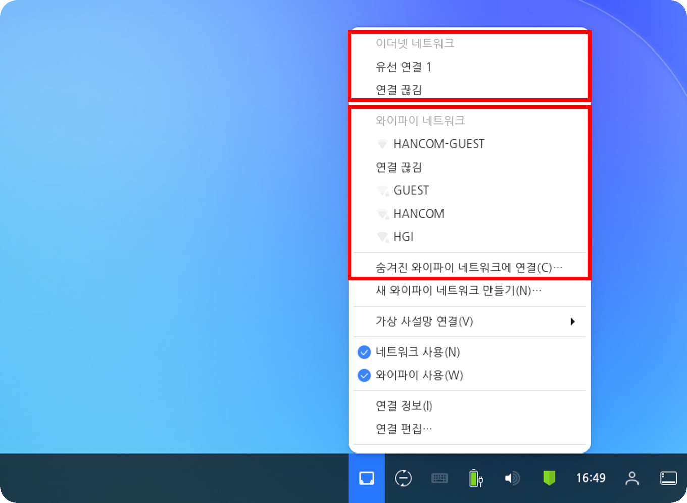

유선 네트워크 또는 와이파이를 사용하여 네트워크를 연결할 수 있습니다. 기존에 등록된 네트워크가 있는 경우 등록된 네트워크로 자동으로 연결됩니다. 네트워크 메뉴를 이용하여 기존 연결된 네트워크에서 다른 네트워크로 변경할 수 있습니다. 유선 네트워크와 와이파이 모두 연결된 경우 유선 네트워크를 사용합니다. 다음 단계를 수행하여 네트워크 연결을 설정할 수 있습니다.1. 우측 하단의 [네트워크] ((유선 네트워크),(와이파이),
(네트워크 미연결)) 아이콘을 클릭하여 네트워크 메뉴를 엽니다.
2. 나타난 메뉴에서 연결을 원하는 네트워크를 선택합니다. 와이파이의 경우 찾는 네트워크가 없다면 [다른 네트워크]를 선택하여 찾을 수 있으며 숨겨진 경우 [숨겨진 와이파이 네트워크에 연결]을 선택하여 사용자가 직접 와이파이 정보를 입력하여 연결할 수 있습니다.